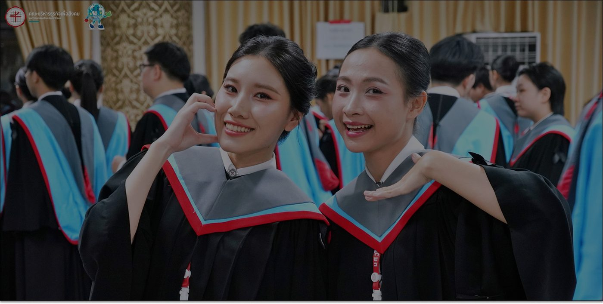
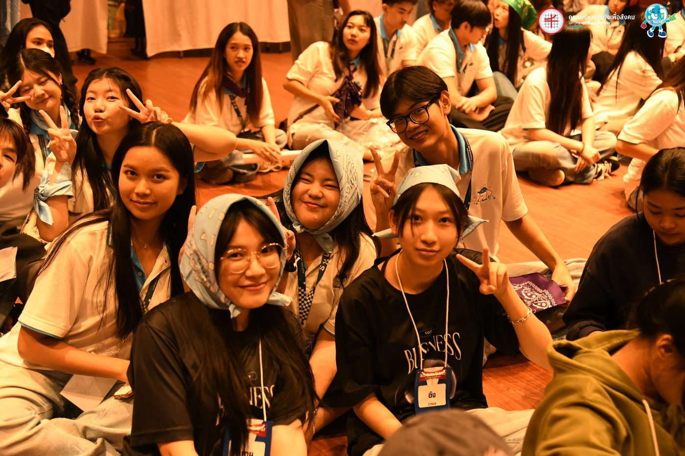

นอกห้องเรียน
ชีวิตนิสิตStudent Life
เรียนรู้ เชื่อมโยง และเติบโต — ประสบการณ์ของนิสิต BAS SWU นอกห้องบรรยาย

การแข่งขันเคสและโปรเจกต์ประยุกต์
นิสิตจากทั้งสามภาควิชานำทฤษฎีไปใช้กับโจทย์ธุรกิจจริง การแข่งขันแผนธุรกิจ และแล็บประจำภาควิชา
ดูกิจกรรมนิสิตชมรมและสโมสรนิสิต
องค์กรที่บริหารโดยนิสิตเปิดพื้นที่ให้ทุกคนได้เป็นผู้นำ — ตั้งแต่การจัดงานอีเวนต์ไปจนถึงการเป็นพี่เลี้ยงรุ่นน้อง
ดูกิจกรรมนิสิตชีวิตในและรอบแคมปัส
จากพื้นที่ทำงานร่วมกันในอาคารนวัตกรรม ไปจนถึงย่านสุขุมวิทโดยรอบ ชีวิตแคมปัสขยายออกไปไกลกว่าประตูห้องเรียน
ดูสิ่งอำนวยความสะดวกกิจกรรมนิสิต
กิจกรรมนิสิตStudent Activities
ไฮไลต์จากชมรมนิสิต องค์กรนิสิต และกิจกรรมระดับคณะตลอดทั้งปี
ปฐมนิเทศและสัปดาห์ต้อนรับ
ปฐมนิเทศนิสิตใหม่ ครอบคลุมทุกภาควิชา
การแข่งขันเคสธุรกิจ
ทีมข้ามภาควิชาแข่งขันแก้โจทย์ธุรกิจจริง
งานชมรมและสมัครสมาชิก
ชมรมที่บริหารโดยนิสิตเปิดรับสมาชิกทุกภาคการศึกษา
สิ่งอำนวยความสะดวก
สิ่งอำนวยความสะดวกCampus Facilities
พื้นที่ Co-working Space
ที่นั่งสบาย อินเทอร์เน็ตความเร็วสูง และโซนเฉพาะสำหรับทำงานเดี่ยวหรือเป็นกลุ่ม
หอสมุดกลาง
โซนอ่านหนังสือเงียบ และห้องกลุ่มปรับอากาศพร้อมอินเทอร์เน็ตไร้สาย
โซนบอร์ดเกม
พื้นที่พบปะสังสรรค์ในหอสมุด สำหรับเล่นเกมและพักผ่อนระหว่างคาบเรียน
โรงอาหาร
อาหารไทยราคาย่อมเยา ทั้งข้าว ก๋วยเตี๋ยว ของว่างและเครื่องดื่ม เปิดให้บริการช่วงเช้าถึงบ่ายวันจันทร์-ศุกร์
สู่สากล
โครงการแลกเปลี่ยนExchange & Global Opportunities
โอกาสแลกเปลี่ยนที่ประเทศเยอรมนี
พันธมิตรแลกเปลี่ยนที่สนับสนุนการศึกษาหนึ่งภาคการศึกษาในเยอรมนี
Frankfurt School of Finance & Management
โครงการแลกเปลี่ยนเฉพาะกับ Frankfurt School ประเทศเยอรมนี
Brokenshire College ประเทศฟิลิปปินส์
บันทึกข้อตกลงความร่วมมือระหว่าง มศว และ Brokenshire College สนับสนุนความร่วมมือและการแลกเปลี่ยน